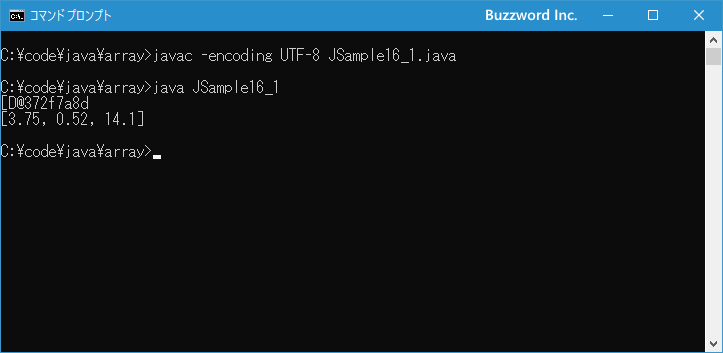
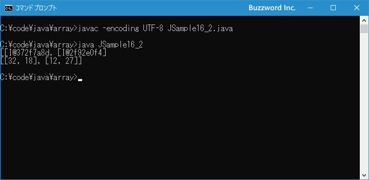

配列の文字列表現を取得する(toString,deepToString)
作成した配列が代入された配列変数を単に出力した場合、配列への参照を表す文字列が出力されますが、 Arrays.toString メソッドを使用すると配列の要素に格納された値を使って配列を文字列で表現したものを取得することができます。ここでは Arrays.toString メソッドおよびタイ次元配列用の Arrays.deepToString を使って配列の文字列表現を取得する方法について解説します。
配列の文字列表現を取得する
配列を作成し配列変数に代入すると、配列変数には配列への参照が格納されます。その為、配列変数をそのまま画面に出力などすると、参照を表す文字列が表示されます。
int[] src = {32, 18, 22};
System.out.println(src); // [I@372f7a8d
配列の要素に格納されている値を使って [値1, 値2, ...] のような形式の文字列を取得するには Arrays.toString メソッドを使用します。 toString はクラスメソッドとして定義されており、引数の型毎に異なるメソッドが定義されています。例えば int[] 型の値を引数に取る toString メソッドは次のように定義されています
public static String toString(int[] a)
パラメータ:
a - 文字列表現を返す配列
戻り値:
aの文字列表現
1 番目の引数に対象の配列を指定すると、配列の文字列表現を戻り値として返します。各要素の値は String.valueOf(int) を使って文字列に変換され、 null の場合は null と表示されます。
次のサンプルを見てください。
int[] src = {32, 18, 22};
System.out.println(src); // [I@372f7a8d
System.out.println(Arrays.toString(src)); // [32, 18, 22]
配列の各要素に格納されている値を使って [32, 18, 22] という形での文字列表現を取得することができました。
それでは簡単なサンプルプログラムを作って試してみます。テキストエディタで次のように記述したあと、 JSample16-1.java という名前で保存します。
import java.util.Arrays;
class JSample16_1{
public static void main(String[] args){
double[] src = {3.75, 0.52, 14.1};
System.out.println(src);
System.out.println(Arrays.toString(src));
}
}
コンパイルを行います。
javac -encoding UTF-8 JSample16_1.java
その後で、次のように実行してください。
java JSample16_1

配列の文字列表現を取得して画面に出力しました。
多次元配列の場合の文字列表現を取得する
Arrays.toString メソッドには引数が Object[] のものも用意されており、多次元配列の場合であっても文字列表現は取得できます。ただ文字列表現の値の部分には要素に格納されている別の配列への参照が表示されます。
int[][] src = {{25, 18}, {12, 37}};
System.out.println(Arrays.toString(src)); // [[I@372f7a8d, [I@2f92e0f4]
多次元配列であっても配列の要素に格納されている値を使って [[値1, ...], [値2, ...]] のような形式の文字列を取得するには Arrays.deepToString メソッドを使用します。 deepToString はクラスメソッドとして次のように定義されています
public static String deepToString(Object[] a)
パラメータ:
a - 文字列表現を返す配列
戻り値:
aの文字列表現
1 番目の引数に対象の多次元配列を指定すると、配列の文字列表現を戻り値として返します。
次のサンプルを見てください。
int[][] src = {{25, 18}, {12, 37}};
System.out.println(Arrays.toString(src)); // [[I@372f7a8d, [I@2f92e0f4]
System.out.println(Arrays.deepToString(src)); // [[25, 18], [12, 37]]
配列の各要素に格納されている値を使って [[25, 18], [12, 37]] という形での文字列表現を取得することができました。
2 次元以上の多次元配列であっても利用できます。
int[][][] src = {
{{8, 4}, {7, 3}},
{{9, 1}, {5, 8}}
};
System.out.println(Arrays.deepToString(src));
// [[[8, 4], [7, 3]], [[9, 1], [5, 8]]]
逆に 1 次元配列で使用するデータ型が基本データ型の場合、 deepToString メソッドを使用すると「エラー: 不適合な型: int[]をObject[]に変換できません」というコンパイルエラーとなります。
int[] src = {32, 18, 22};
System.out.println(Arrays.deepToString(src));
一次元配列の場合には toString メソッドを使用してください。
それでは簡単なサンプルプログラムを作って試してみます。テキストエディタで次のように記述したあと、 JSample16-2.java という名前で保存します。
import java.util.Arrays;
class JSample16_2{
public static void main(String[] args){
int[][] src = {{32, 18}, {12, 27}};
System.out.println(Arrays.toString(src));
System.out.println(Arrays.deepToString(src));
}
}
コンパイルを行います。
javac -encoding UTF-8 JSample16_2.java
その後で、次のように実行してください。
java JSample16_2

2 次元配列の文字列表現を取得して画面に出力しました。
-- --
Arrays.toString メソッドおよびタイ次元配列用の Arrays.deepToString を使って配列の文字列表現を取得する方法について解説しました。
( Written by Tatsuo Ikura )

著者 / TATSUO IKURA
初心者～中級者の方を対象としたプログラミング方法や開発環境の構築の解説を行うサイトの運営を行っています。